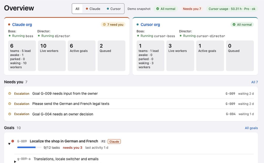

Operator guide / Monitoring
Monitor work,
capacity and cost.
Use the read-only web dashboard to inspect progress and capacity. Add the optional Herdr app for Mac for a status bar and alert notifications.
Open the demo overview
Browser / Read-only
Inspect the web dashboard.
The web UI runs on the Linux host. It shows live agents, pull requests, goals and work waiting for the owner. It does not run tasks from the browser.
AttentionWhat needs me?
Start with pending decisions, blocked items and escalations.
Can another agent start?
Inspect the agent cap, available memory, system load and runtime usage limits.
Where did the work go?
Trace Claude tokens and estimated costs. Cursor activity is reported through sessions and agent-hours.
Why did a change come back?
Inspect rejections, repeat attempts and merges held by the judge.

The public demo uses fictional records. Claude cost estimates use model list prices, not invoices. Cursor activity has no token-cost estimate. Usage caps govern agent starts; cost estimates are not monetary hard limits.
Mac / Herdr desktop
Add desktop alerts.
The optional Herdr app for Mac adds a native status bar, a dashboard across configured machines and teams, and notifications for new alerts. This is a separate desktop interface, not the web demo.